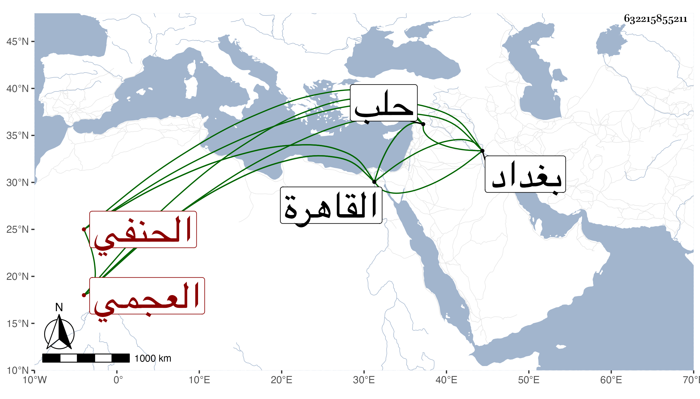

0902Sakhawi.DawLamic.ITO20230111-ara1.EIS1600.632215855211
Biography ID: 632215855211
882
زاده العجمي الخرزباني الحنفي ، ويعرف بالشيخ زادة . قدم من بلاده إلى حلب سنة أربع وتسعين ، وهو شيخ ساكن يتكلم في العلم بسكون ويتعانى حل المشكلات فنزل بجوار المحب بن الشحنة فشغل الناس وكان عالما بالعربية والمنطق والكشاف مقتدر على حل المشكلات من هذه العلوم . طارحه السراج عبد اللطيف الفوي بأسئلة من العربية وغيرها نظما ونثرا منها في قول الكشاف إن الاستثناء في قوله تعالى إنا أرسلنا إلى قوم مجرمين إلا آل لوط متصل أو منقطع فأجابه بجواب حسن أنه إن كان يتعلق بقوم يكون منقطعا لأن القوم صفتهم الاجرام أو بمن الضمير في صفتهم فيكون متصلا ، واستشكل بأن الضمير هو الموصوف المقيد بالصفة فلو قلت مررت بقوم مجرمين إلا رجلا صالحا كان الاستثناء منقطا فينبغي أن يكون الاستثناء منقطعا في الصورتين فأجاب بأنه لا إشكال قال وغاية ما يمكن أن يقال إن الضمير المستكن في المجرمين وإن كان عائدا إلى القوم بالاجرام إلا أن إسناد الاجرام إليه يقتضي تجرده عن اعتبار اتصافه بالاجرام فيكون اثباتا للثابت إلى آخر كلامه ، ونظم في الجواب أيضا قصيدة طويلة يقول فيها :
| ولا الشعر من ذاتي ولا هو شيمتي | ولا أنا من خيل الفكاهة في الخبر |
ثم دخل القاهرة وولي بعد ذلك تدريس الشيخونية ومشيختها فأقام مدة طويلة إلى أن كان في أواخر سنة ثمان وثمانمائة فوثب عليه فيها بالجاه الكمال بن العديم لما شنع عليه بأنه طال ضعفه وخرف وتألم الشيخ لذلك هو وولده ومقت أهل الخير ابن العديم بسبب صنيعه هذا ، ولم يلبث أن مات واستقر جمال الدين بولده في تدريس الحنفية بمدرسته جبرا لما وقع من إخراج الشيخونية عن أبيه ثم عنه مع كونه ناب عنه فيها ، ذكره ابن خطيب الناصرية وتبعه شيخنا في إنبائه ، وأرخه المقريزي في سلخ ذي القعدة سنة تسع وأنه دفن بالشيخونية وسماه الشيخ شمس الدين محمد قال وكان من أعيان الحنفية ، وله يد في العلوم الفلسفية واستدعاه السلطان من بغداد إلى القاهرة ، ويحرر هذا كله .
